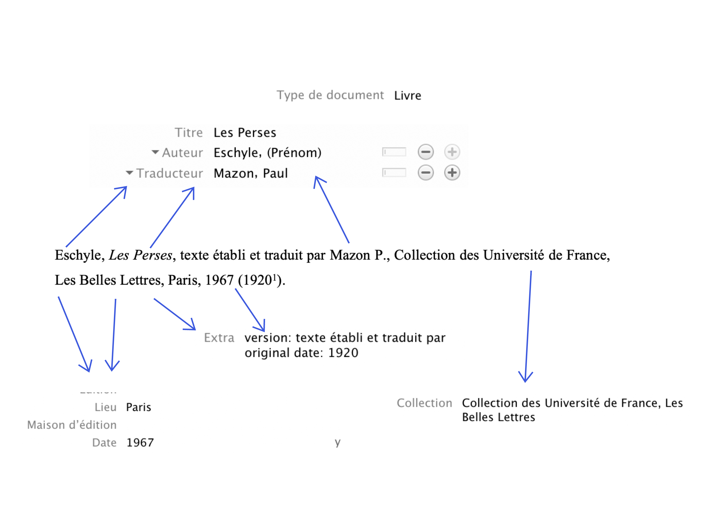
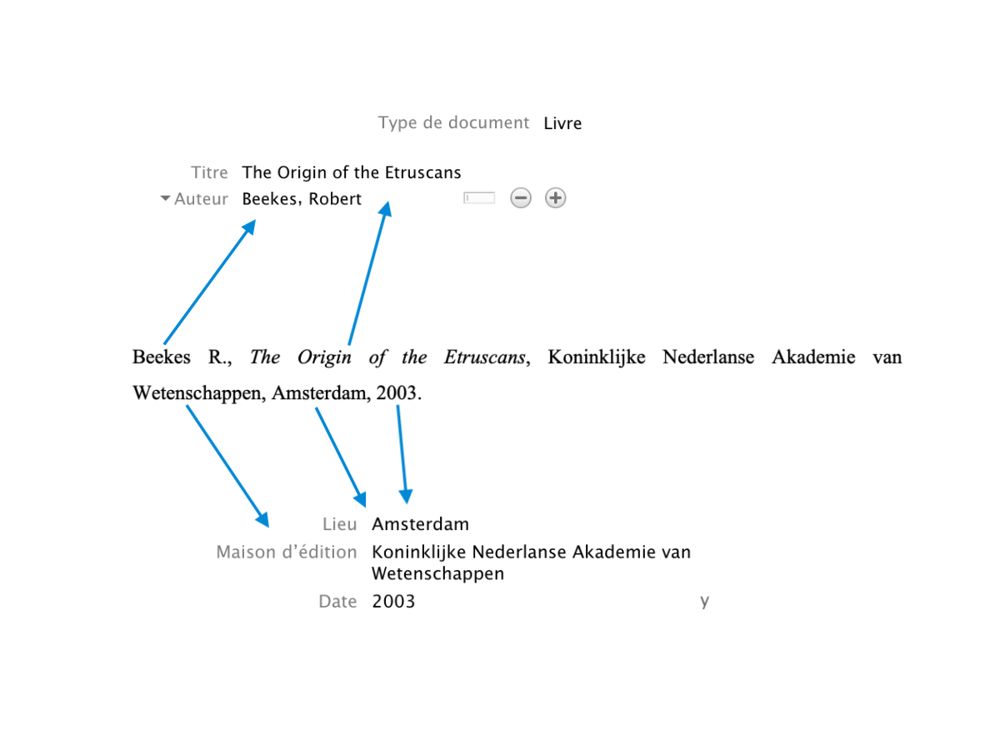
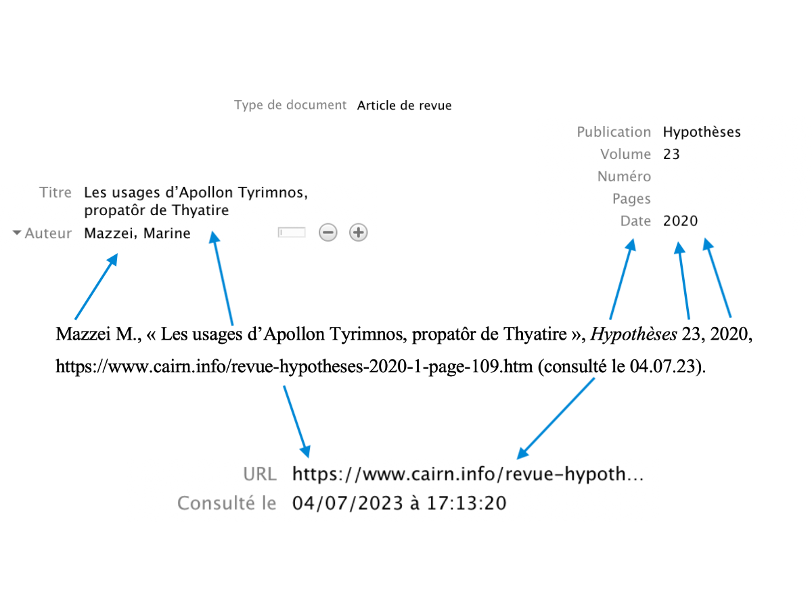
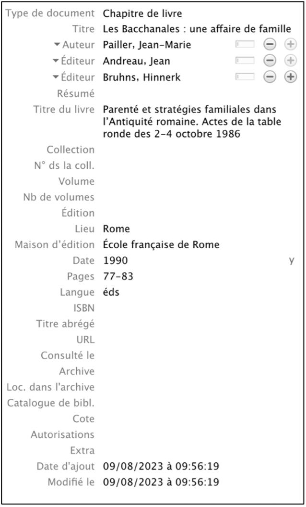
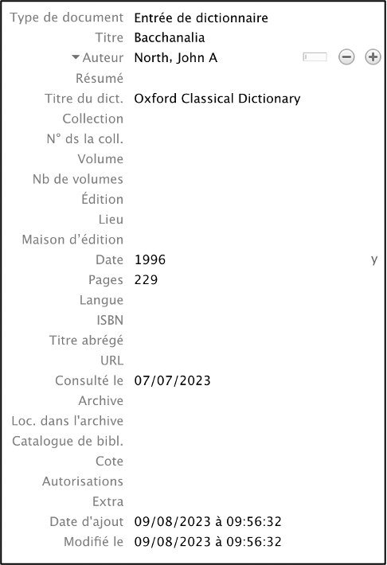
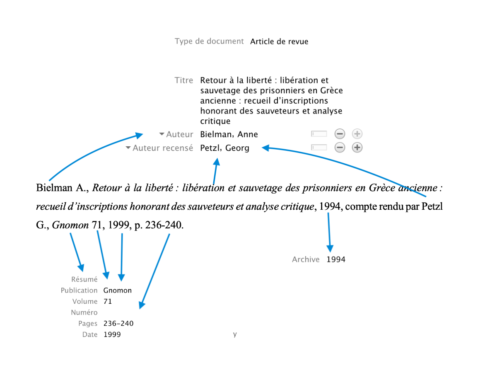

Styles bibliographiques
et intégration à Zotero
| ACCUEIL |
| STYLE HISTOIRE |
| Le style "Histoire" |
| Usage du style avec Zotero |
| STYLE ASA |
| Le style "ASA" |
| Usage du style avec Zotero |
| TUTORIEL ZOTERO |
| Mise en place Installation, interface, synchronisation. |
| Import des références Champs, PDF, import automatique. |
| Gestion des références Collections, marqueurs, notes, groupes. |
| Usage des références Export, notes de bas de pages. |
| RESSOURCES |
| Liens utiles | À PROPOS |
| Crédits |
USAGE DU STYLE "ASA" AVEC ZOTERO
Pour que la bibliographie ressorte exactement telle que désirée, il est impératif d'entrer les informations de façon correcte dans les champs de Zotero. Voici un exemple détaillé qui précise comment les informations bibliographiques doivent être saisies pour chaque type de document. Il est également possible de consulter la bibliothèqe d'exemple disponible ici.
Sommaire des types de documents
- Documents anciens
- Ouvrages modernes
- Articles tirés de périodiques
- Articles tirés d’ouvrages collectifs (mélanges, actes de colloques, recueils)
- Articles de dictionnaires/encyclopédies
- Comptes rendus
Documents anciens
Pour les document anciens, sélectionner le type de document "Livre" puis entrer les informations bibliographiques de la manière suivante:
- Saisir le titre du document dans le champ "Titre"
- Saisir le nom de l'auteur antique dans le champ "Auteur"
- Ajouter un champ "Traducteur" et y saisir le nom du traducteur ou de la traductrice
- Saisir le nom de la collection ainsi que de l'édition séparées par une virgule dans "Collection"
- Si besoin, saisir les numéros des livres utilisés en romain précédé du mot "livres" (dans la langue de l'ouvrage) dans la champ "Volume"
- Saisir le lieu d'édition dans le champ "Lieu"
- Saisir la date de publication dans le champ "Date"
- Saisir le rôle du traducteur ou dans le traductrice dans le champ "Extra" précédé du label "version: "
- Si besoin, saisir la date de la première publication dans le champ "Extra" précédé du label "original-date: "
*Cette étape est impérative pour que le document ne soit pas traité comme un ouvrage moderne
Exemple pour les documents anciens

Ouvrages modernes
Pour les ouvrages modernes, sélectionner le type de document "Livre" puis entrer les informations bibliographiques de la manière suivante:
- Saisir le titre du livre dans le champ "Titre"
- Saisir les noms des auteurs ou autrices dans les champs "Auteur"
- Ne pas remplir de champ "Traducteur", sinon le livre sera traité comme un document ancien
- Saisir la ville d'édition dans le champ "Lieu"
- Saisir la maison d'édition dans le champ "Maison d'édition"
- Saisir la date de publication dans le champ "Date"
- Si besoin, saisir la date de la première publication dans le champ "Extra" précédé du label "original-date: "
Exemple pour les ouvrage modernes

Articles tirés de périodiques
Pour les articles tirés de périodiques, sélectionner le type de document "Article de revue" puis entrer les informations bibliographiques de la manière suivante:
- Saisir le titre de l'article dans le champ "Titre"
- Saisir les noms des auteurs ou autrices dans les champs "Auteur"
- Ne pas remplir de champ "Auteur recensé", sinon l'article sera traité comme un compte rendu
- Saisir le nom de la revue dans le champ "Publication"
- Saisir le numéro de la revue dans le champ "Volume"
- Saisir la date de publication dans le champ "Date"
- Si l'article est tiré d'une revue papier, saisir le numéro des pages de l'article dans le champ "Pages"
- Si l'article est disponible est ligne, coller le lien vers l'article dans le champ "URL" et saisir la date de consultation dans le champ "Consulté le"
Exemple pour les articles tirés de périodiques

Articles tirés d’ouvrages collectifs (mélanges, actes de colloques, recueils)
Pour les articles tirés d'ouvrages collectif, sélectionner le type de document "Chapitre de livre" puis entrer les informations bibliographiques de la manière suivante:
- Saisir le titre de l'article dans le champ "Titre"
- Saisir les noms des auteurs ou autrices dans les champs "Auteur"
- Ajouter des champs "Éditeur" et y saisir les noms des éditeurs/directeurs éditrices/directrices de la publication
- Saisir le titre de l'ouvrage collectif dans le champ "Titre du livre"
- Saisir la ville d'édition dans le champ "Lieu"
- Saisir la maison d'édition dans le champ "Maison d'édition"
- Saisir la date de publication dans le champ "Date"
- Saisir la mention "éd" ou "éds" dans la langue de la publication dans le champ "Langue"*
- Si l'article est tiré d'un ouvrage papier, saisir le numéro des pages de l'article dans le champ "Pages"
- Si l'article est disponible est ligne, coller le lien vers l'article dans le champ "URL" et saisir la date de consultation dans le champ "Consulté le"
*Pour le français éd/éds ou dir/dirs, pour l'anglais ed/eds, pour l'allemand Hsrg, pour l'italien a cura di
Exemple pour les articles tirés d'ouvrages collectifs

Articles de dictionnaires ou d'encyclopédies
Pour les articles tirés de dictionnaires ou d'encyclopédies, sélectionner le type de document "Entrée de dictionnaire" ou "Article d'encyclopédie" puis entrer les informations bibliographiques de la manière suivante:
- Saisir le titre de l'article dans le champ "Titre"
- Saisir le nom de l'auteur ou de l'autrice dans le champ "Auteur"
- Saisir le titre du dictionnaire ou dans l'encyclopédie dans le champ "Titre du dict." ou "Titre de l'encycl."
- Saisir la date de publication dans le champ "Date"
- Si l'article est tiré d'un document papier, saisir le numéro des pages de l'article dans le champ "Pages"
- Si l'article est disponible est ligne, coller le lien vers l'article dans le champ "URL" et saisir la date de consultation dans le champ "Consulté le"
Exemple pour les articles de dictionnaires ou d'encyclopédies

Comptes rendus
Pour les comptes rendus, sélectionner le type de document "Article de revue" puis entrer les informations bibliographiques de la manière suivante:
- Saisir le titre du livre dans le champ "Titre"
- Saisir les noms des auteurs ou autrices dans les champs "Auteur"
- Ajouter un champ "Auteur recensé" et y saisir le nom de l'auteur ou autrice du compte rendu*
- Saisir le titre de la revue dans laquelle est publié le compte rendu dans le champ "Publication"
- Saisir le numéro de la revue dans le champ "Volume"
- Saisir la date de publication du compte rendu dans le champ "Archive"
- Si le compte rendu est tiré d'une revue papier, saisir le numéro des pages du compte rendu dans le champ "Pages"
- Si le compte rendu est disponible en ligne, coller le lien vers le compte rendu dans le champ "URL" et saisir la date de consultation dans le champ "Consulté le"
*Cette étape est impérative pour que le compte rendu ne soit pas traité comme un article de périodique
Exemple pour les comptes rendus
